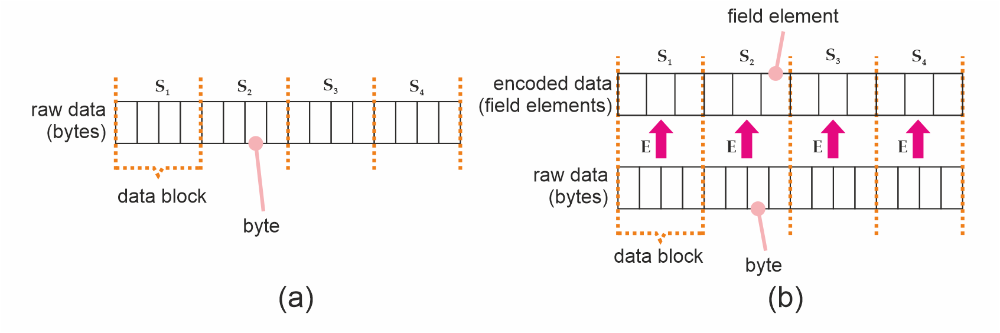

MERKLE-TREE
| Field | Value |
|---|---|
| Name | Merkle Tree |
| Status | draft |
| Category | Standards Track |
| Editor | Balázs Kőműves bkomuves@status.im |
| Contributors | Giuliano Mega giuliano@status.im, Mohammed Alghazwi mohalghazwi@status.im |
Abstract
This specification describes the Merkle tree construction adopted in Logos Storage. The construction relies on keyed hashing, injective encodings, and a simple padding approach to prevent a variety of collision attacks, and is designed to operate both on conventional hashing functions like SHA-2, and ZK-friendly functions like Poseidon2.
Specification
Merkle trees can be implemented in a variety of ways and, if done naively, can be also attacked in a variety of ways (e.g BitCoinOps25). For this reason, this document focuses a concrete implementation of a Merkle tree which helps avoid common pitfalls.
We start by laying out some definitions in the Definitions section, followed by our keyed hash construction, which guards the Merkle against certain padding and layer abuse attacks. We then discuss injective encodings and their role in the construction of secure Merkle trees that deal with finite field elements in the Encoding section. Next, we provide some brief guidance on serialization in the Serialization/Deserialization section. Finally, we present an abstract interface for a Merkle tree module in the Interfaces section.
Definitions
A Merkle tree, built on a hash function H, produces a Merkle root of type T (the "Target type"). This is usually the same type as the output of the hash function (we will assume this below). Some examples:
- SHA1:
Tis 160 bits - SHA256:
Tis 256 bits - Keccak (SHA3):
Tcan be one of 224, 256, 384 or 512 bits - Poseidon2:
Tis one or more finite field element(s) (depending on the field size) - Monolith:
Tis 4 Goldilocks field elements
The hash function H can also have different types S ("Source type") of inputs. For example:
- SHA1 / SHA256 / SHA3:
Sis an arbitrary sequence of bits1 - binary compression function:
Sis a pair ofT-s - Poseidon2:
Sis a sequence of finite field elements - Poseidon2 compression function:
Sis at mostt-kfield elements, wherekfield elements should be approximately 256 bits (in our caset=3,k=1for BN254 field; ort=12,k=4for the Goldilocks field; ort=24,k=8for a ~32 bit field) - as an alternative, the "Jive strategy" for binary compression (see [Bouvier22]) can eliminate the "minus
k" requirement (you can compresstintot/2) - A naive Merkle tree implementation could for example accept only a power-of-two sized sequence of
T
Notation: Let's denote a sequence of T-s by [T].
Keyed Hash Construction
One of the main goals of a secure Merkle tree construction is to avoid collision attacks; i.e., situations in which an attacker is able to obtain a tree with the same Merkle root as a legitimate tree, but using data that is different from the data used to construct the tree originally. In that sense, we are interested in two different types of attacks here.
1. Layer abuse attacks
A Merkle tree requires, at its minimum, two elements to be constructed:
- A hashing function
H : S -> T; - a binary compression function
C: T x T -> T.
In some hashing functions like SHA256, one could express C(a, b) as H(F(a, b)), where F(a, b) = a || b (Fig. 1(a)) and || denotes byte string concatenation. This creates a type of symmetry one can then exploit - since a Merkle tree root does not encode its depth, one could pretend that F(a, b) is actually data, and construct a shorter Merkle tree which evaluates to the same root as before (Fig. 1(b)); i.e., $T^{\prime}_3$ in the second tree is the same as $T_7$ in the original tree.

Figure 1. (a) original Merkle tree; (b) a different Merkle tree with the same Merkle root as the original; i.e., $T^{\prime}_3 = T_7$, constructed from a layer abuse attack.
2. Padding attacks
Merkle trees can be unbalanced as the number of leaves will often not be a power of two. A common technique is then to pad the tree in some way by adding "synthetic" missing children to internal nodes that do not have both of them (Fig. 2(a)). If done carelessly, this can potentially allow an attacker to replace the padding with real data that is equivalent to such padding (Fig. 2(b)), and again generate the same Merkle root from data that is different from what had been intended.

Figure 2. (a) Original padded Merkle tree, and (b) a Merkle tree with the same root as the original built from a padding attack.
If this sounds hypothetical, early versions of Bitcoin padded their Merkle trees by using the existing child of a node as padding, and this led to security issues that had to be later addressed (e.g. see [CVE-2012-2459]).
Construction
To prevent the problems above, we adopt a keyed compression function C: K x T x T -> T which takes a key in addition to the two target elements it needs to compress. Our key is composed by two bits, which encode:
- whether a parent node is an even or an odd node; i.e., whether it has 2 or 1 children, respectively;
- whether the node belongs to the bottom layer; i.e. the first layer of internal nodes above the leaves, or not.
This information is converted to a number 0 <= key < 4 by the following algorithm:
data LayerFlag
= BottomLayer -- ^ it's the bottom (initial, widest) layer
| OtherLayer -- ^ it's not the bottom layer
data NodeParity
= EvenNode -- ^ it has 2 children
| OddNode -- ^ it has 1 child
-- | Key based on the node type:
--
-- > bit0 := 1 if bottom layer, 0 otherwise
-- > bit1 := 1 if odd, 0 if even
--
nodeKey :: LayerFlag -> NodeParity -> Int
nodeKey OtherLayer EvenNode = 0x00
nodeKey BottomLayer EvenNode = 0x01
nodeKey OtherLayer OddNode = 0x02
nodeKey BottomLayer OddNode = 0x03
The number is then used to key the compression function, as follows:
- for finite field sponge based hash functions, like Poseidon2 or Monolith, we apply the permutation function to
(x,y,key)where the key (as field element) is placed at index 8 (0-based) of the sponge state (assuming state size of 12). Then we take the first component of the result (T); - for hash functions like SHA256 we simply prepend the key; i.e., we take
SHA256(key|x|y)wherekeyis encoded as bytes.
This is in practice equivalent to having 4 different compression functions C_key(x, y) = C(key, x, y). Note that the BottomLayer flag is set for all compression nodes whose children are leaves, but leaves themselves; i.e. the H(S_i), are not keyed.
Remark: Since standard SHA256 includes padding, adding a key at the beginning doesn't result in extra computation (it's always two internal hash calls). However, a faster (twice as fast) alternative would be to choose 4 different random-looking initialization vectors, and not do padding. This would be a non-standard SHA256 invocation.
Finally, we proceed from the initial sequence in layers: take the previous sequence, apply the keyed compression function for each consecutive pairs (x,y) : (T,T) with the correct key based on whether this was the initial (bottom) layer, and whether it's a singleton "pair" x : T, in which case it's also padded with a zero to (x,0).
Note that if the input is a singleton list [x], we still apply one layer, so in that case the root will be compress[key=3](x,0).
Encoding
Our Merkle trees are created from arbitrary data, and arbitrary data means raw byte strings. Such byte strings are typically first split into equally-sized blocks2 of length $b$, which we refer to as data blocks3. Each data block then undergoes hashing under H, and those become the tree's leaves (Fig. 3(a)). When the source type S for the hashing function is a byte string; e.g. as with SHA256, those strings can be taken to be the $S_i$ in Fig. 1 and hashed directly.
For hashing functions which do not take byte strings as input - like Poseidon2, which operates on sequences of finite field elements - we must encode our data blocks into the proper type first (Figure 3(b)).

Figure 3. (a) A byte string (raw data), split into data blocks which are also byte strings. (b) Data blocks after undergoing encoding.
We define an encoding function E to be a function which can do that for us. Formally speaking, E can encode an arbitrary-valued byte string of length $b$ into a value of the required type S; i.e., E : byte[b] -> S. Such an encoding function MUST always be injective; i.e., distinct byte strings MUST map into distinct values of the type S. To see why, suppose E were not injective. This means there are two byte strings D_1 and D_2 such that E(D_1) = E(D_2) = S_1 = S_2. We could then take the raw data used to build a Merkle tree $A$, replace all occurrences of D_1 with D_2, and build an identical Merkle tree from distinct data - which is what we want to avoid.
The next section deals with injective encodings for the major types we use - including SHA256, BN254, Goldilocks. We then discuss padding in Sec. Padding.
Injective Encodings
Encoding for SHA256 is trivial in that it already operates on byte strings, so there is no extra work to be done. For most of the other hashing functions we care about, however, S is a sequence of finite field elements, and we therefore need to perform encoding.
In such situations, it is convenient to construct our injective encoding function E by chunking the input sequence of size $b$ into smaller pieces of size M, and then applying a element encoding function E_s function to each chunk. This function can output either a single or multiple field elements per M-sized chunk (Listing 1).
def E(
raw: List[byte],
E_s: List[byte] -> List[FieldElement],
M: uint,
) -> List[FieldElement]:
# requires len(raw) to be multiple of M
chunks = len(raw) / M
encoded = []
for i in range(0, chunks):
encoded.extend(E_s(raw[i*M:(i+1)*M-1]))
return encoded
Listing 1. Constructing E from E_s.
For the BN254 field, we can construct E_s by taking M=31, and having the 31 bytes interpreted as a little-endian integer modulo p. This outputs one single field element per $31$ bytes.
Poseidon2 or Monolith (over the Goldilocks field) take multiples of four Goldilocks field elements at a time. We have some choices: We can have M=4*7=28, as a single field element can encode 7 bytes but not 8. Or, if we want to be more efficient, we can still achieve M=31 by storing 62 bits in each field element. For this to work, some convention needs to be chosen; our implementation is the following:
#define MASK 0x3fffffffffffffffULL
// NOTE: we assume a little-endian architecture here
void goldilocks_convert_31_bytes_to_4_field_elements(const uint8_t *ptr, uint64_t *felts) {
const uint64_t *q0 = (const uint64_t*)(ptr );
const uint64_t *q7 = (const uint64_t*)(ptr+ 7);
const uint64_t *q15 = (const uint64_t*)(ptr+15);
const uint64_t *q23 = (const uint64_t*)(ptr+23);
felts[0] = (q0 [0]) & MASK;
felts[1] = ((q7 [0]) >> 6) | ((uint64_t)(ptr[15] & 0x0f) << 58);
felts[2] = ((q15[0]) >> 4) | ((uint64_t)(ptr[23] & 0x03) << 60);
felts[3] = ((q23[0]) >> 2);
}
This simply chunks the 31 bytes = 248 bits into 62 bits chunks, and interprets them as little endian 62 bit integers.
Padding
The element encoding function E_s requires byte strings of length M, but the input's length; i.e., the size $b$ our data blocks, might not be a multiple of M. We might therefore need to pad the blocks, and we need to do it in a way that avoids the usual trap: different input data resulting in the same padded representation.
We adopt a 10* padding strategy to pad raw data blocks to a multiple of M bytes; i.e., we always add a 0x01 byte, and then as many 0x00 bytes as required for the length to be divisible by M. Assuming again a data block of length $b$ bytes, then the padded sequence will have M*(floor(b/M)+1) bytes.
Note: The 10* padding strategy is an invertible operation, which will ensure that there is no collision between sequences of different lengths; i.e., to unpad scan from the end, drop 0x00 bytes until the first 0x01, drop that too; reject if no 0x01 found
Once the data is padded, it can be chunked to pieces of M bytes (so there will be floor(b/M)+1 chunks) and encoded by calling the element encoding function for each chunk.
Remark: We don't pad the sequence of leaf hashes (T-s) when constructing the Merkle tree, as the tree construction ensures that different lengths will result in different root hashes. However, when using the sponge construction, we need to further pad the sequence of encoded field elements to be a multiple of the sponge rate; there again we apply the 10* strategy, but there the 1 and 0 are finite field elements.
Serializing / Deserializing
When using SHA256 or similar, this is trivial (use the standard, big-endian encoding).
When T consists of prime field elements, simply take the smallest number of bytes the field fits in (usually 256, 64 or 32 bits, that is 32, 8 or 4 bytes), and encode as a little-endian integer (mod the prime). This is trivial to invert.
To serialize the actual tree, just add enough metadata that the size of each layer is known, then you can simply concatenate the layers, and serialize like as above. This metadata can be as small as the size of the initial layer, that is, a single integer.
Reference Implementations
- in Haskell: https://github.com/logos-storage/logos-storage-proofs-circuits/blob/master/reference/haskell/src/Poseidon2/Merkle.hs
- in Nim: https://github.com/codex-storage/codex-storage-proofs-circuits/blob/master/reference/nim/proof_input/src/merkle.nim
Interfaces
The interface for a Merkle tree typically requires two types of APIs:
- one which takes a sequence
Sof lengthnas input, and produces a Merkle tree of typeT, and; - one which takes a sequence of bytes (or even bits, but in practice we probably only need bytes), and produces a Merkle tree of type
T.
We also typically want to be able to obtain proofs for existing data blocks, and check blocks along with their proofs against a root. The interface is described in Listing 2. We avoid going into actual algorithms here as those are already specified in the reference implementations.
class Encoder[S]:
"""
Encodes sequences of bytes to S. The encoding
produced by `Encoder` MUST be injective.
"""
def encodeBytes(data: List[byte]) -> S:
...
class MerkleProof[T]:
"""
A `MerkleProof` contains enough information to check
a leaf against a tree root.
The verifier MUST reconstruct node parity and
layer keys deterministically from index and
the `leaf_count`; these values MUST NOT be supplied
externally.
"""
index: uint
leaf_count: uint
path: List[T]
def create(data: List[S]) -> MerkleTree[T]:
"""Creates a `MerkleTree` from a sequence
of data in the ."""
...
def create(
data: List[byte],
block_size: uint,
encoder: Encoder[S],
) -> MerkleTree[T]:
"""Creates a `MerkleTree` from raw data by
splitting into blocks of `block_size` size and
encoding them.
"""
return create(
encoder.encodeBytes(data_block)
for split_chunks(data_block, block_size)
)
def get_proof(
self: MerkleTree[T],
i: uint,
) -> MerkleProof[T]:
"""Obtains a `MerkleProof` for the i-th leaf
in the tree."""
...
def verify_proof(
root: T,
proof: MerkleProof[T],
) -> bool:
"""Verifies an existing `MerkleProof` against
a tree's root.
:return: `True` if the proof verifies, or `False`
otherwise.
"""
...
Listing 2. Abstract interface for a Merkle tree.
Copyright
Copyright and related rights waived via CC0.
References
[Bouvier22]: Bouvier et al. "New Design Techniques for Efficient Arithmetization-Oriented Hash Functions: Anemoi Permutations and Jive Compression Mode", Cryptology ePrint Archive, 2022.
[BitCoinOps25]: Merkle tree vulnerabilities. https://bitcoinops.org/en/topics/merkle-tree-vulnerabilities/
[CVE-2012-2459]: Block Merkle Calculation Exploit. https://bitcointalk.org/?topic=102395
Some less-conforming implementation of these could take a sequence of bytes instead.
Data blocks might also need to be padded to a multiple of $b$, but raw data padding is beyond the scope of this document.
The standard block size for Logos storage is $65,536$ bytes for SHA256 trees, and $2,048$ bytes for Poseidon2 trees.